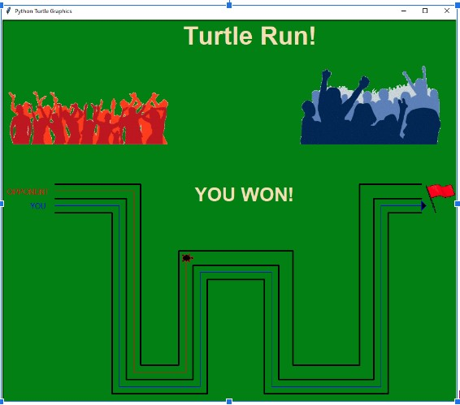
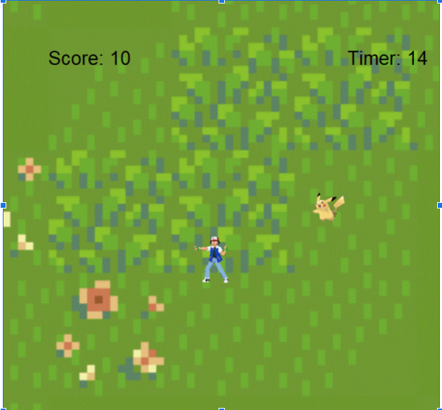
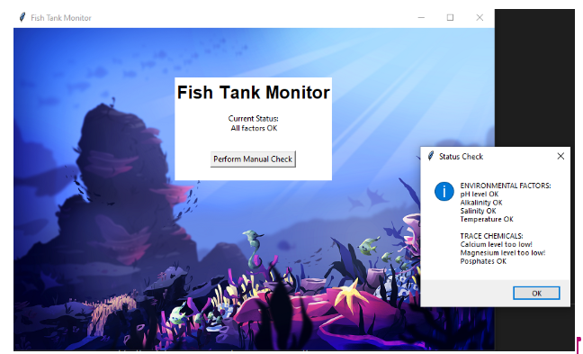
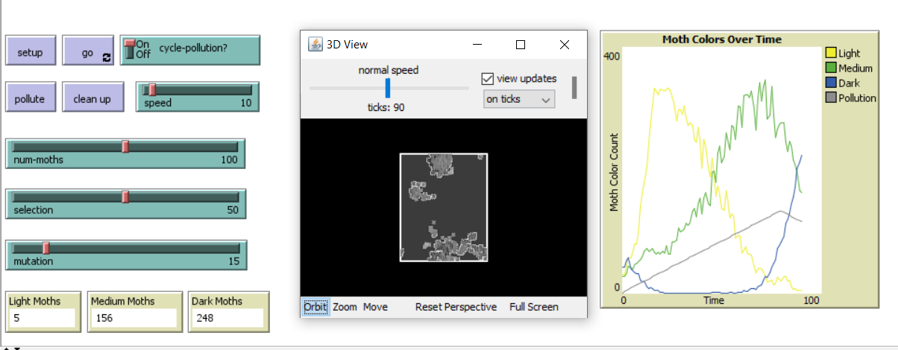
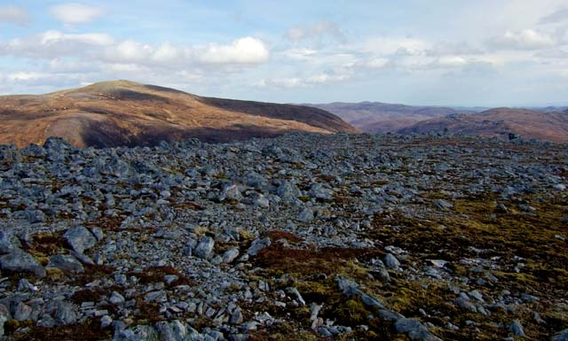
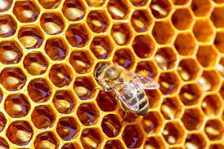

This is my Portfolio Page!

Project 1 - Turtle Run
 This is my first project called Turtle Run.
In this game, the player has to answer simple questions to win the race against his opponent.
If the player
answers the question correctly, he moves and the opponent stays still. The opposite happens when the player gets the answer wrong.
Project 2 - Gotta Catch 'Em All
 This is my second project called Gotta Catch 'Em All .
In this game, the player has to catch pokemons and each pokemon is a different score.
There is a leaderboard and the player is placed according to his score with respect to others.
Project 3: Duck Saber
This is my third project called Duck Saber.
In this game, the player has to use a saber to slice the matching block while avoiding bombs and blocks of other colors.
The user can also choose from a list of three songs to be played during the game.
Project 4: Fish Tank
 This is my fourth project called Fish Tank.
In this project, we had to identify issues and security breaches in the given Fish Tank Software.
We fixed those issues using debugging and were able to remove the unexpected error we got in the VS Code Terminal.
Project 5: Peppered Moths.
 This is my fifth project called Peppered Moths.
This project simulates the population of different colored moths based on pollution.
As pollution increases, dark colored moth increase whereas the opposite happens when pollution decreases.
Project 6: Analyzing Rover Data.
 By analyzing the given data, we were able to conclude the rover is in rocky mountains.
The graphs generated from the data match the trend of lower temperatures heating up quickly, low sound levels, and bright light sometimes interrupted by clouds.
We were a little confused between desert plains and rocky mountains but lower sound levels clearly indicated to rocky mountains.
Project 7: Honey Production and facilities analysis.
By analyzing online data, we concluded that honey production and the number of honey facilities have increased throughout US over the years.